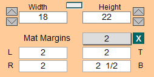
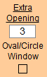
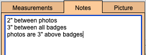
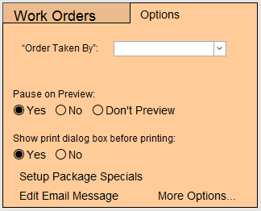
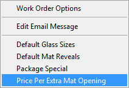
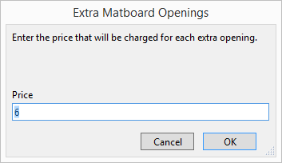
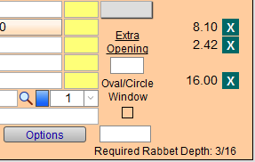
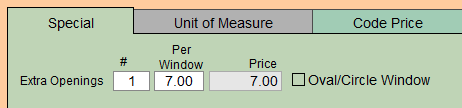

Add Extra Mat Openings
This is an overview how to add and price multiple mat openings on a Work Order.
How to Enter Multiple Mat Openings on a Work Order
If you need to set a retail price for your extra openings, then skip this section and go to the next (then come back).
-
Measure the outside dimension of all the openings including any spaces between.
For example, four 8 x 10 openings, arranged in a square with 2 inches of mat between them, would have a width of 18 x 22. (8 + 2 + 8 x 10 + 2 + 10).
This is the overall "window" size to enter into FrameReady. -
In the Width and Height field, type in your dimensions. Enter your Mat Margins.

Tip: The grey box allows you to select all four sides at once. The white fields allow you to enter each side individually.
-
FrameReady assumes one opening is cut for every mat, so enter only the number of extra mat openings in Extra Openings field.

If there are 4 openings in total, then enter 3 in the box (one opening is always assumed). -
To document measurement details for multiple openings on the Work Order, you can enter the measurements into the Note field.

To document the design:
a) Draw a sketch onto a piece of paper as you are designing the multiple openings and then flip the page over and print the Work Order onto the other side.
b) Take a digital photo of the design and add it to the Picture tab. You can take more than one image. -
You may wish to lock the price (using the Padlock icon) after you have quoted a price to the customer.
-
Print the Work Order.
-
Sketch your design and measurement details on the reverse of the printed Work Order. Or take a digital image of the layout and add it to the Work Order (in the Picture tab).
Your framer thanks you!
How to Price an Extra Mat Opening
You may need to set a price for your extra openings.
-
From the Main Menu, in the Work Order section, open the Options tab.

-
Click the More Options... button.

-
The Work Order Options window appears.
Open the Work Order Defaults tab.

-
FrameReady assumes one opening is cut for every mat.
In the Price per extra window opening field, enter the price you wish to charge for every extra mat opening when designing a multiple opening mat, e.g. 6.00 -
Click Done.
How to Adjust Extra Mat Opening Pricing Defaults from the Work Order
-
Select Perform on the Menubar at the top of the screen.
-
Select Setup Options from the list of options on the pull down list.

-
Select Price Per Extra Mat Opening from the list of options on the pull down list.

-
A new window appears for you to enter in the new price per Extra Opening.

-
Enter the new price and select OK. This is now the new default and will be used in all future Work Orders.
How to Adjust Extra Mat Openings for a Single Work Order
-
Go to the Work Order in question.
-
Click the Extra Openings button (in the framing components section).

-
The "Mat Design" details window appears.
-
Enter or adjust the dollar value in the Per Window field. You do not need to enter a dollar sign.

-
Click Done.
© 2023 Adatasol, Inc.